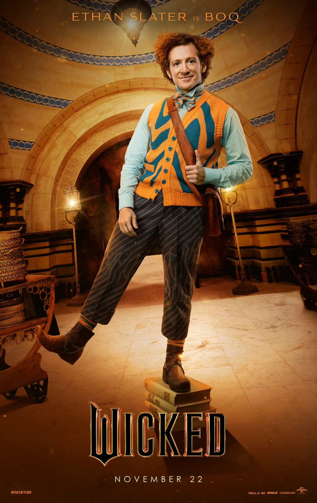

Boq Woodsman, is the love interest of Elphaba's younger sister, Nessarose. However, the feeling is not mutual; Boq only became involved with Nessarose in hopes of impressing Galinda, on whom he truly has his heart set. When Nessarose eventually becomes the governor of Munchkinland, she uses her political power to enslave Boq as her personal servant, given that he is a Munchkin. When Boq confesses his love for Galinda, Nessarose becomes extremely angry with him. At that point, she attempts to casts a spell on him from Elphaba's spell Grimmerie, but mispronounces the incantation. This causes Boq's heart to shrink until it is completely gone. In a desperate attempt to save Boq's life, Elphaba casts a spell on Boq who falls asleep. Boq awakens as the Tin Woodman as Elphaba disappears. In her fear, Nessarose blames his new form on Elphaba, saying she did it purposely and that she had tried to stop her.